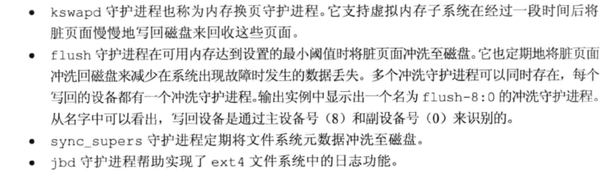
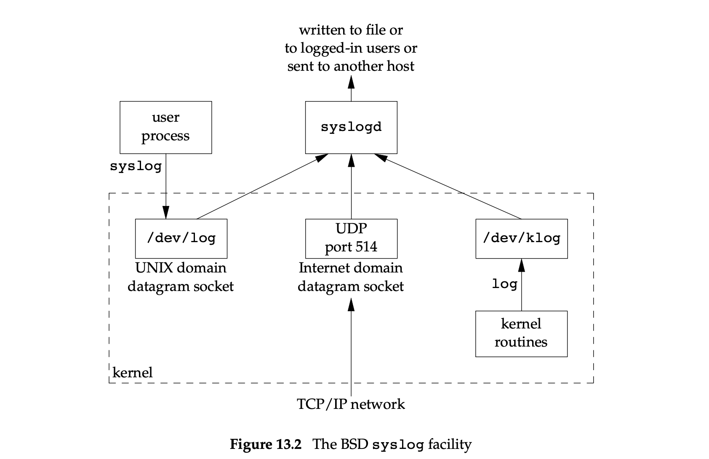
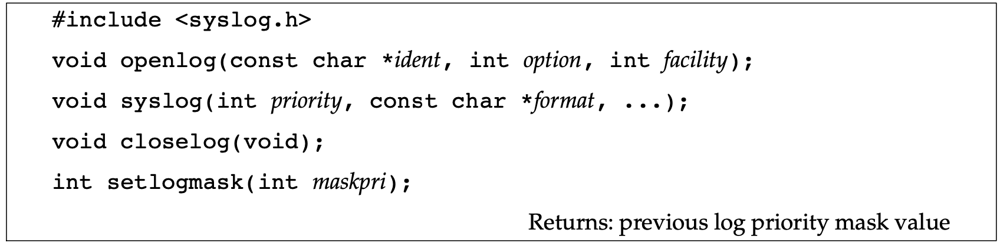
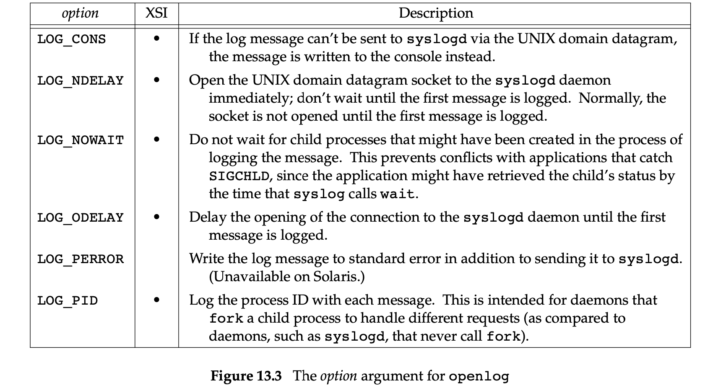
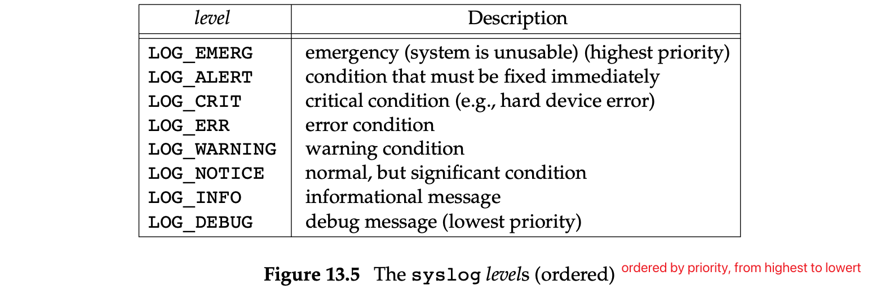

守护进程的特征 1 2 3 4 5 6 7 8 9 10 11 12 13 14 15 16 17 18 19 20 21 22 23 24 25 26 27 28 29 30 31 32 33 34 35 36 37 38 39 40 41 42 43 44 45 46 47 48 49 50 51 52 53 54 55 56 57 58 59 60 61 62 63 64 65 66 67 68 69 70 71 72 73 74 75 76 77 78 79 80 81 82 83 84 85 86 87 88 89 90 91 92 93 94 95 96 97 98 99 100 101 102 103 104 105 106 107 108 109 110 111 112 113 114 115 116 117 118 119 120 121 122 123 124 125 126 127 128 129 130 131 132 133 134 135 136 137 138 139 140 141 142 143 144 145 146 147 148 149 150 151 152 153 154 155 156 157 158 159 160 161 162 yfs@VM-0-6-centos /home/yfs ps fajex PPID PID PGID SID TTY TPGID STAT UID TIME COMMAND 0 2 0 0 ? -1 S 0 0:03 [kthreadd] 2 4 0 0 ? -1 S< 0 0:00 \_ [kworker/0:0H] 2 6 0 0 ? -1 S 0 1:32 \_ [ksoftirqd/0] 2 7 0 0 ? -1 S 0 0:28 \_ [migration/0] 2 8 0 0 ? -1 S 0 0:00 \_ [rcu_bh] 2 9 0 0 ? -1 S 0 23:42 \_ [rcu_sched] 2 10 0 0 ? -1 S< 0 0:00 \_ [lru-add-drain] 2 11 0 0 ? -1 S 0 0:15 \_ [watchdog/0] 2 12 0 0 ? -1 S 0 0:11 \_ [watchdog/1] 2 13 0 0 ? -1 S 0 0:28 \_ [migration/1] 2 14 0 0 ? -1 S 0 1:14 \_ [ksoftirqd/1] 2 16 0 0 ? -1 S< 0 0:00 \_ [kworker/1:0H] 2 17 0 0 ? -1 S 0 0:11 \_ [watchdog/2] 2 18 0 0 ? -1 S 0 0:28 \_ [migration/2] 2 19 0 0 ? -1 S 0 1:01 \_ [ksoftirqd/2] 2 21 0 0 ? -1 S< 0 0:00 \_ [kworker/2:0H] 2 22 0 0 ? -1 S 0 0:12 \_ [watchdog/3] 2 23 0 0 ? -1 S 0 0:28 \_ [migration/3] 2 24 0 0 ? -1 S 0 1:01 \_ [ksoftirqd/3] 2 26 0 0 ? -1 S< 0 0:00 \_ [kworker/3:0H] 2 28 0 0 ? -1 S 0 0:00 \_ [kdevtmpfs] 2 29 0 0 ? -1 S< 0 0:00 \_ [netns] 2 30 0 0 ? -1 S 0 0:02 \_ [khungtaskd] 2 31 0 0 ? -1 S< 0 0:00 \_ [writeback] 2 32 0 0 ? -1 S< 0 0:00 \_ [kintegrityd] 2 33 0 0 ? -1 S< 0 0:00 \_ [bioset] 2 34 0 0 ? -1 S< 0 0:00 \_ [bioset] 2 35 0 0 ? -1 S< 0 0:00 \_ [bioset] 2 36 0 0 ? -1 S< 0 0:00 \_ [kblockd] 2 37 0 0 ? -1 S< 0 0:00 \_ [md] 2 38 0 0 ? -1 S< 0 0:00 \_ [edac-poller] 2 39 0 0 ? -1 S< 0 0:00 \_ [watchdogd] 2 45 0 0 ? -1 S 0 0:05 \_ [kswapd0] 2 46 0 0 ? -1 SN 0 0:00 \_ [ksmd] 2 47 0 0 ? -1 SN 0 0:06 \_ [khugepaged] 2 48 0 0 ? -1 S< 0 0:00 \_ [crypto] 2 56 0 0 ? -1 S< 0 0:00 \_ [kthrotld] 2 58 0 0 ? -1 S< 0 0:00 \_ [kmpath_rdacd] 2 59 0 0 ? -1 S< 0 0:00 \_ [kaluad] 2 60 0 0 ? -1 S< 0 0:00 \_ [kpsmoused] 2 61 0 0 ? -1 S< 0 0:00 \_ [ipv6_addrconf] 2 75 0 0 ? -1 S< 0 0:00 \_ [deferwq] 2 131 0 0 ? -1 S 0 1:40 \_ [kauditd] 2 217 0 0 ? -1 S< 0 0:00 \_ [iscsi_eh] 2 271 0 0 ? -1 S< 0 0:00 \_ [ata_sff] 2 280 0 0 ? -1 S 0 0:00 \_ [scsi_eh_0] 2 281 0 0 ? -1 S< 0 0:00 \_ [scsi_tmf_0] 2 282 0 0 ? -1 S 0 0:00 \_ [scsi_eh_1] 2 283 0 0 ? -1 S< 0 0:00 \_ [scsi_tmf_1] 2 284 0 0 ? -1 S< 0 0:02 \_ [kworker/3:1H] 2 286 0 0 ? -1 S< 0 0:00 \_ [ttm_swap] 2 296 0 0 ? -1 S< 0 1:20 \_ [kworker/0:1H] 2 308 0 0 ? -1 S 0 4:28 \_ [jbd2/vda1-8] 2 309 0 0 ? -1 S< 0 0:00 \_ [ext4-rsv-conver] 2 315 0 0 ? -1 S< 0 0:09 \_ [kworker/2:1H] 2 317 0 0 ? -1 S< 0 0:06 \_ [kworker/1:1H] 2 541 0 0 ? -1 S< 0 0:00 \_ [nfit] 2 778 0 0 ? -1 S< 0 0:00 \_ [ib-comp-wq] 2 779 0 0 ? -1 S< 0 0:00 \_ [kworker/u9:0] 2 780 0 0 ? -1 S< 0 0:00 \_ [ib-comp-unb-wq] 2 781 0 0 ? -1 S< 0 0:00 \_ [ib_mcast] 2 782 0 0 ? -1 S< 0 0:00 \_ [ib_nl_sa_wq] 2 785 0 0 ? -1 S< 0 0:00 \_ [mlx5_ib_sigerr_] 2 850 0 0 ? -1 S< 0 0:00 \_ [rdma_cm] 2 20662 0 0 ? -1 S 0 0:11 \_ [kworker/u8:0] 2 25746 0 0 ? -1 S 0 0:00 \_ [kworker/u8:1] 2 12625 0 0 ? -1 S 0 0:00 \_ [kworker/1:1] 2 15544 0 0 ? -1 S 0 0:00 \_ [kworker/3:0] 2 16402 0 0 ? -1 S 0 0:00 \_ [kworker/0:2] 2 17473 0 0 ? -1 S 0 0:00 \_ [kworker/1:0] 2 20766 0 0 ? -1 S 0 0:00 \_ [kworker/0:0] 2 24093 0 0 ? -1 S 0 0:00 \_ [kworker/3:2] 2 25601 0 0 ? -1 S 0 0:00 \_ [kworker/2:1] 2 26623 0 0 ? -1 S 0 0:00 \_ [kworker/2:0] 2 27761 0 0 ? -1 S 0 0:00 \_ [kworker/2:2] 2 28341 0 0 ? -1 S 0 0:00 \_ [kworker/0:1] 2 28344 0 0 ? -1 S 0 0:00 \_ [kworker/3:1] 2 28557 0 0 ? -1 S 0 0:00 \_ [kworker/1:2] 0 1 1 1 ? -1 Ss 0 20:03 /usr/lib/systemd/systemd --switched-root --system --deserialize 22 1 398 398 398 ? -1 Ss 0 7:13 /usr/lib/systemd/systemd-journald 1 420 420 420 ? -1 Ss 0 0:00 /usr/sbin/lvmetad -f 1 438 438 438 ? -1 Ss 0 0:00 /usr/lib/systemd/systemd-udevd 1 652 652 652 ? -1 S<sl 0 2:24 /sbin/auditd 1 686 686 686 ? -1 Ss 998 0:12 /usr/bin/lsmd -d 1 692 692 692 ? -1 Ssl 999 3:24 /usr/lib/polkit-1/polkitd --no-debug 1 695 695 695 ? -1 Ss 0 4:20 /usr/lib/systemd/systemd-logind 1 697 697 697 ? -1 Ss 81 9:15 /usr/bin/dbus-daemon --system --address=systemd: --nofork --nopidfile 1 700 700 700 ? -1 Ss 0 0:00 /usr/sbin/acpid 1 709 709 709 ? -1 Ss 38 0:08 /usr/sbin/ntpd -u ntp:ntp -g 1 1090 1090 1090 ? -1 Ss 0 0:00 /sbin/dhclient -q -lf /var/lib/dhclient/dhclient--eth0.lease -pf /var/ 1 1157 1157 1157 ? -1 Ssl 0 1102:51 /usr/sbin/rshim 1 1171 1171 1171 ? -1 S<Ls 0 0:00 /sbin/iscsid -f 1 1180 1180 1180 ? -1 Ssl 0 7:58 /usr/bin/python2 -Es /usr/sbin/tuned -l -P 1 1186 1186 1186 ? -1 Ssl 0 97:37 /usr/bin/containerd 1 1442 1442 1442 ? -1 Ssl 0 19:26 /usr/bin/dockerd -H fd:// --containerd=/run/containerd/containerd.sock 1 1469 1469 1469 ? -1 Ssl 0 6:12 /usr/sbin/rsyslogd -n 1 1513 1510 1510 ? -1 Sl 0 11:20 /usr/local/qcloud/tat_agent/tat_agent 1 1537 1537 1537 ? -1 Ss 0 0:43 /usr/sbin/crond -n 1 1553 1553 1553 ? -1 Ss 0 0:00 /usr/sbin/atd -f 1 1589 1589 1589 tty1 1589 Ss+ 0 0:00 /sbin/agetty --noclear tty1 linux 1 1592 1592 1592 ttyS0 1592 Ss+ 0 0:00 /sbin/agetty --keep-baud 115200,38400,9600 ttyS0 vt220 1 1594 1594 1594 ? -1 Ss 0 0:16 /usr/libexec/postfix/master -w 1594 1626 1594 1594 ? -1 S 89 0:03 \_ qmgr -l -t unix -u 1594 9645 1594 1594 ? -1 S 89 0:00 \_ pickup -l -t unix -u 1 2287 1602 1602 ? -1 Sl 0 936:05 /usr/local/qcloud/YunJing/YDEyes/YDService 2287 2536 1602 1602 ? -1 Sl 0 20:55 \_ /bin/sh -c sleep 100 1 2304 1602 1602 ? -1 Sl 0 29:28 /usr/local/qcloud/YunJing/YDLive/YDLive 1 9286 9286 1186 ? -1 Sl 0 5:37 /usr/bin/containerd-shim-runc-v2 -namespace moby -id 662b6dda19c29855e 9286 9307 9307 9307 ? -1 Ssl 999 63:16 \_ mysqld 1 17081 17081 1186 ? -1 Sl 0 6:08 /usr/bin/containerd-shim-runc-v2 -namespace moby -id 9cac54ea2afbc9202 17081 17101 17101 17101 ? -1 Ssl 70 791:17 \_ gaussdb 17081 30762 30762 30762 pts/0 30815 Ss 0 0:00 \_ bash 30762 30784 30784 30762 pts/0 30815 S 0 0:00 | \_ su omm 30784 30785 30785 30762 pts/0 30815 S 70 0:00 | \_ bash 30785 30815 30815 30762 pts/0 30815 S+ 70 0:00 | \_ gsql -d postgres -p 5432 17081 32328 32328 32328 ? 32401 Ss 0 0:00 \_ bash 32328 32340 32340 32328 ? 32401 S 0 0:00 \_ su omm 32340 32341 32341 32328 ? 32401 S 70 0:00 \_ bash 32341 32401 32401 32328 ? 32401 S+ 70 0:00 \_ gsql -d postgres -p 5432 1 26730 26730 1186 ? -1 Sl 0 5:46 /usr/bin/containerd-shim-runc-v2 -namespace moby -id b245ca55385e1319c 26730 26750 26750 26750 ? -1 Ssl 70 570:24 \_ gaussdb 26730 27320 27320 27320 pts/0 27345 Ss 0 0:00 \_ bash 27320 27344 27344 27320 pts/0 27345 S 0 0:00 | \_ su omm 27344 27345 27345 27320 pts/0 27345 S+ 70 0:00 | \_ bash 26730 14408 14408 14408 ? 26210 Ss 0 0:00 \_ bash 14408 14437 14437 14408 ? 26210 S 0 0:00 | \_ su omm 14437 14438 14438 14408 ? 26210 S 70 0:00 | \_ bash 14438 26210 26210 14408 ? 26210 S+ 70 0:00 | \_ gsql -d postgres -p 5432 -r 26730 4633 4633 4633 ? 4633 Ss+ 0 0:00 \_ bash 26730 27110 27110 27110 ? 5773 Ss 0 0:00 \_ bash 27110 27747 27747 27110 ? 5773 S 0 0:00 \_ su omm 27747 27748 27748 27110 ? 5773 S 70 0:00 \_ bash 27748 5773 5773 27110 ? 5773 S+ 70 0:00 \_ gsql -d postgres -p5432 1 22051 22051 1186 ? -1 Sl 0 5:17 /usr/bin/containerd-shim-runc-v2 -namespace moby -id fc70d882bd242af61 22051 22072 22072 22072 ? -1 Ss 999 0:53 \_ postgres 22072 22169 22169 22169 ? -1 Ss 999 0:01 \_ postgres: checkpointer 22072 22170 22170 22170 ? -1 Ss 999 0:31 \_ postgres: background writer 22072 22171 22171 22171 ? -1 Ss 999 0:33 \_ postgres: walwriter 22072 22172 22172 22172 ? -1 Ss 999 0:31 \_ postgres: autovacuum launcher 22072 22173 22173 22173 ? -1 Ss 999 0:59 \_ postgres: stats collector 22072 22174 22174 22174 ? -1 Ss 999 0:02 \_ postgres: logical replication launcher 1 4746 4746 4746 ? -1 Ss 0 1:38 /usr/sbin/sshd -D 4746 14139 14139 14139 ? -1 Ss 0 0:00 \_ sshd: yfs [priv] 14139 14141 14139 14139 ? -1 S 1001 0:00 | \_ sshd: yfs@pts/6 14141 14142 14142 14142 pts/6 14142 Ss+ 1001 0:00 | \_ -zsh LC_CTYPE=UTF-8 USER=yfs LOGNAME=yfs HOME=/home/yfs PA 4746 20357 20357 20357 ? -1 Ss 0 0:00 \_ sshd: yfs [priv] 20357 20365 20357 20357 ? -1 S 1001 0:00 | \_ sshd: yfs@pts/9 20365 20366 20366 20366 pts/9 28799 Ss 1001 0:01 | \_ -zsh LC_CTYPE=UTF-8 USER=yfs LOGNAME=yfs HOME=/home/yfs PA 20366 28799 28799 20366 pts/9 28799 R+ 1001 0:00 | \_ ps fajex USER=yfs LOGNAME=yfs HOME=/home/yfs PATH=/usr 4746 21054 21054 21054 ? -1 Ss 0 0:00 \_ sshd: yfs [priv] 21054 21062 21054 21054 ? -1 S 1001 0:00 | \_ sshd: yfs@pts/0 21062 21063 21063 21063 pts/0 21127 Ss 1001 0:00 | \_ -zsh LC_CTYPE=UTF-8 USER=yfs LOGNAME=yfs HOME=/home/yfs PA 21063 21127 21127 21063 pts/0 21127 S+ 1001 0:00 | \_ man ps USER=yfs LOGNAME=yfs HOME=/home/yfs PATH=/usr/l 21127 21138 21127 21063 pts/0 21127 S+ 1001 0:00 | \_ less USER=yfs LOGNAME=yfs HOME=/home/yfs PATH=/usr 4746 28788 28788 28788 ? -1 Ss 0 0:00 \_ sshd: root [priv] 28788 28790 28788 28788 ? -1 S 74 0:00 \_ sshd: root [net] 1 30484 30483 30483 ? -1 Sl 0 0:18 /usr/local/qcloud/stargate/bin/sgagent -d 1 17802 17801 17801 ? -1 S 0 0:05 barad_agent 17802 17803 17801 17801 ? -1 S 0 6:00 \_ barad_agent 17802 17804 17801 17801 ? -1 Sl 0 41:01 \_ barad_agent
内核级守护进程
父进程 ID 为 0 的进程通常是内核进程，它们作为系统引导装入过程的一部分而启动。
通常存在于系统的整个生命期中，它们以超级用户特权运行，无控制终端（终端名设置为问号），无命令行
在 ps fajex 的输出实例中，内核守护进程的名字会用方括号包裹。
用户级守护进程
大多数用户层守护进程都是进程组的组长进程以及会话首进程，而且是这些进程组和会话中的唯一进程（rsyslogd 除外）
父进程是 init 进程
无控制终端（终端名为问号，可能是调用了 setsid()），无命令行
内核级守护进程举例：
kthreadd：用来创建其他内核进程，是其他内核进程的父进程。

编程规则
调用 unask 函数将文件模式创建屏蔽字设置为一个已知值，通常为 0.
子进程调用 fork ，并使父进程调用 exit。
若守护进程以一条简单的 shell 命令启动，则父进程终止会让 shell 认为这条 shell 命令执行完毕。
子进程继承了父进程的 group ID，但子进程 ID 却与父进程不同，这保证了子进程不是进程组的组长。
这一步也是下一步调用 setsid 的先决条件。
调用 setsid 创建新会话
让进程先变为新会话的首进程
然后变为新进程组的组长进程
最后解除控制终端
将当前工作目录变为 root 目录。
关闭不需要的文件描述符。
某些守护进程将标准输入、标准输出、错误输出重定向到 /dev/null 中以达到禁用的效果。
1 2 3 4 5 6 7 8 9 10 11 12 13 14 15 16 17 18 19 20 21 22 23 24 25 26 27 28 29 30 31 32 33 34 35 36 37 38 39 40 41 42 43 44 45 46 47 48 49 50 51 52 53 54 55 56 57 58 59 60 61 62 63 64 65 66 67 68 69 70 71 72 73 74 75 76 77 78 79 80 81 82 83 84 85 86 87 88 89 90 #include "apue.h" #include <syslog.h> #include <fcntl.h> #include <sys/resource.h> void daemonize (const char *cmd) { int i, fd0, fd1, fd2; pid_t pid; struct rlimit rl ; struct sigaction sa ; umask(0 ); if (getrlimit(RLIMIT_NOFILE, &rl) < 0 ) err_quit("%s: can't get file limit" , cmd); if ((pid = fork()) < 0 ) err_quit("%s: can't fork" , cmd); else if (pid != 0 ) exit (0 ); setsid(); sa.sa_handler = SIG_IGN; sigemptyset(&sa.sa_mask); sa.sa_flags = 0 ; if (sigaction(SIGHUP, &sa, NULL ) < 0 ) err_quit("%s: can't ignore SIGHUP" , cmd); if ((pid = fork()) < 0 ) err_quit("%s: can't fork" , cmd); else if (pid != 0 ) exit (0 ); if (chdir("/" ) < 0 ) err_quit("%s: can't change directory to /" , cmd); if (rl.rlim_max == RLIM_INFINITY) rl.rlim_max = 1024 ; for (i = 0 ; i < rl.rlim_max; i++) close(i); fd0 = open("/dev/null" , O_RDWR); fd1 = dup(0 ); fd2 = dup(0 ); openlog(cmd, LOG_CONS, LOG_DAEMON); if (fd0 != 0 || fd1 != 1 || fd2 != 2 ) { syslog(LOG_ERR, "unexpected file descriptors %d %d %d" , fd0, fd1, fd2); exit (1 ); } }
守护线程打印错误日志 守护线程由于没有控制终端因此并不能使用标准的错误输出。大多数守护进程是通过 BSD syslog 设备进行错误输出。

生成日志信息的三种方法：
内核例程调用 log()。
大多数用户级守护进程调用 syslog 生成日志信息。
通过 UDP 514 端口接收本机或远程主机的日志。
通常，syslogd 守护进程会读取上述三种日志。它在启动时会读取 /etc/syslog.conf 文件，该文件决定了不同种类的日志被发送到何处。如紧急信息会被送往系统管理员（若登录）并在控制台打印，但是警告信息会被记录到文件中。

参数说明：
参数名
描述
ident
会添加到每则日志中，通常是程序名
option
用于指定不同选项的位屏蔽字
facility
目的是让配置文件说明来自不同设备的信息将以不同的方式处理。若不调用 openlog 或 facility 为 0，那么调用 syslog 时可以将 facility 作为 priotity 参数的一部分进行说明
priority
值可由图 13.4 图 13.5 中所列选项的一个组合
format
传递给 vsprintf 做格式化。任何 format 中的 %m 都会被替换为 strerror(errno) 所返回的字符串


logger 命令用来向 syslog 设备发送日志信息。常用于非交互的 shell 脚本中打印日志。
举例： 1 2 3 4 5 6 7 openlog("lpd" , LOG_PID, LOG_LPR); syslog(LOG_ERR, "open error for %s: %m" , filename); syslog(LOG_ERR | LOG_LPR, "open error for %s: %m" , filename);
syslog() 的变体函数
该函数在 linux 中使用时应该使用 _USE_BSD 重新声明。
大多数的 syslogd 实现会将消息段时间存放于队列中。若在此期间收到了重复消息，syslog 守护进程只是想日志中写入类似 “last message repeated N times” 的消息。
补充教程
单实例守护进程 单实例指的是一些守护进程为保证操作的正确性，在同一时间只能有一个该进程副本运行。
应用场景 / 应用原因：
守护进程需要对设备进行专有名词的访问。
设备驱动有时会阻止 /dev 下设备节点的多次访问尝试。因此多守护进程对同一个设备的多次访问有时会失败。
文件锁和记录锁机制的存在保证守护进程仅有一个副本在运行。
1 2 3 4 5 6 7 8 9 10 11 12 13 14 15 16 17 18 19 20 21 22 23 24 25 26 27 28 29 30 31 32 33 34 35 36 37 38 39 40 41 42 43 #include <unistd.h> #include <stdlib.h> #include <fcntl.h> #include <syslog.h> #include <string.h> #include <errno.h> #include <stdio.h> #include <sys/stat.h> #define LOCKFILE "/var/run/daemon.pid" #define LOCKMODE (S_IRUSR|S_IWUSR|S_IRGRP|S_IROTH) extern int lockfile (int ) ;int already_running (void ) { int fd; char buf[16 ]; fd = open(LOCKFILE, O_RDWR|O_CREAT, LOCKMODE); if (fd < 0 ) { syslog(LOG_ERR, "can't open %s: %s" , LOCKFILE, strerror(errno)); exit (1 ); } if (lockfile(fd) < 0 ) { if (errno == EACCES || errno == EAGAIN) { close(fd); return (1 ); } syslog(LOG_ERR, "can't lock %s: %s" , LOCKFILE, strerror(errno)); exit (1 ); } ftruncate(fd, 0 ); sprintf (buf, "%ld" , (long )getpid()); write(fd, buf, strlen (buf)+1 ); return (0 ); }
守护进程的惯例
惯例一：若守护进程使用锁文件，则该文件需要存储在 /var/run (需有超级用户权限)中。命名规则：[daemon / service name].pid
惯例二：若守护进程支持配置，则配置文件应存储在 /etc 中，命名规则：[daemon / service name].conf
惯例三：守护进程可以以命令行启动，但通常从系统初始化脚本（/etc/rc 或 /etc/init.d/ ）中启动。若在 /etc/inittab 中包含该守护进程的 respawn 记录项，当该守护进程退出后，init 进程会重启该守护进程。
惯例四：一般守护进程在启动时读取配置文件，通常不会再次读取它，即使发生更改。若想使配置生效，一种是重启该守护进程，另一种是守护进程通过捕捉 SIGHUP 信号来读取配置。因为守护进程要么是无控制终端的会话首进程，要么是孤儿进程组的一员，因此 SIGHUP 信号对守护进程来说是可重复使用的，并不会产生歧义。
1 2 3 4 5 6 7 8 9 10 11 12 13 14 15 16 17 18 19 20 21 22 23 24 25 26 27 28 29 30 31 32 33 34 35 36 37 38 39 40 41 42 43 44 45 46 47 48 49 50 51 52 53 54 55 56 57 58 59 60 61 62 63 64 65 66 67 68 69 70 71 72 73 74 75 76 77 78 79 80 81 82 83 84 85 86 87 88 89 90 91 92 93 94 95 96 97 98 99 100 101 102 #include "apue.h" #include <pthread.h> #include <syslog.h> sigset_t mask;extern int already_running (void ) ;void reread (void ) { } void *thr_fn (void *arg) { int err, signo; for (;;) { err = sigwait(&mask, &signo); if (err != 0 ) { syslog(LOG_ERR, "sigwait failed" ); exit (1 ); } switch (signo) { case SIGHUP: syslog(LOG_INFO, "Re-reading configuration file" ); reread(); break ; case SIGTERM: syslog(LOG_INFO, "got SIGTERM; exiting" ); exit (0 ); default : syslog(LOG_INFO, "unexpected signal %d\n" , signo); } } return (0 ); } int main (int argc, char *argv[]) { int err; pthread_t tid; char *cmd; struct sigaction sa ; if ((cmd = strrchr (argv[0 ], '/' )) == NULL ) cmd = argv[0 ]; else cmd++; daemonize(cmd); if (already_running()) { syslog(LOG_ERR, "daemon already running" ); exit (1 ); } sa.sa_handler = SIG_DFL; sigemptyset(&sa.sa_mask); sa.sa_flags = 0 ; if (sigaction(SIGHUP, &sa, NULL ) < 0 ) err_quit("%s: can't restore SIGHUP default" ); sigfillset(&mask); if ((err = pthread_sigmask(SIG_BLOCK, &mask, NULL )) != 0 ) err_exit(err, "SIG_BLOCK error" ); err = pthread_create(&tid, NULL , thr_fn, 0 ); if (err != 0 ) err_exit(err, "can't create thread" ); while (1 ) { syslog(LOG_ERR, "pid = %d" , getpid()); sleep(1 ); } exit (0 ); }
1 2 3 4 5 6 7 8 9 10 11 12 13 14 15 #include <unistd.h> #include <fcntl.h> int lockfile (int fd) { struct flock fl ; fl.l_type = F_WRLCK; fl.l_start = 0 ; fl.l_whence = SEEK_SET; fl.l_len = 0 ; return (fcntl(fd, F_SETLK, &fl)); }
1 2 3 4 5 6 7 8 9 10 11 12 13 14 15 16 17 18 19 20 21 22 23 24 25 26 27 28 29 30 31 32 33 34 35 36 37 38 39 40 41 42 43 44 45 46 47 48 49 50 51 52 53 54 55 56 57 58 59 60 61 62 63 64 65 66 67 68 69 70 71 72 73 74 75 76 77 78 79 80 81 82 83 84 85 #include "apue.h" #include <syslog.h> #include <errno.h> extern int lockfile (int ) ;extern int already_running (void ) ;void reread (void ) { } void sigterm (int signo) { syslog(LOG_INFO, "got SIGTERM; exiting" ); exit (0 ); } void sighup (int signo) { syslog(LOG_INFO, "Re-reading configuration file" ); reread(); } int main (int argc, char *argv[]) { char *cmd; struct sigaction sa ; if ((cmd = strrchr (argv[0 ], '/' )) == NULL ) cmd = argv[0 ]; else cmd++; daemonize(cmd); if (already_running()) { syslog(LOG_ERR, "daemon already running" ); exit (1 ); } sa.sa_handler = sigterm; sigemptyset(&sa.sa_mask); sigaddset(&sa.sa_mask, SIGHUP); sa.sa_flags = 0 ; if (sigaction(SIGTERM, &sa, NULL ) < 0 ) { syslog(LOG_ERR, "can't catch SIGTERM: %s" , strerror(errno)); exit (1 ); } sa.sa_handler = sighup; sigemptyset(&sa.sa_mask); sigaddset(&sa.sa_mask, SIGTERM); sa.sa_flags = 0 ; if (sigaction(SIGHUP, &sa, NULL ) < 0 ) { syslog(LOG_ERR, "can't catch SIGHUP: %s" , strerror(errno)); exit (1 ); } while (1 ) { syslog(LOG_ERR, "pid = %d" , getpid()); sleep(1 ); } exit (0 ); }
客户端-服务器模型 守护进程的一个典型应用是作为服务进程，如 syslogd 就是一个服务端的角色。
每个服务进程（守护进程）若不设置就会继承父进程的文件描述符，包括访问端点、配置文件、日志文件等。这会引起一些安全问题，如守护进程修改了配置文件、欺骗客户端认为正在与服务端通信等。一个可行的方案是将守护进程不需要的文件描述符关闭：
1 2 3 4 5 6 7 8 9 10 11 12 13 14 15 #include "apue.h" #include <fcntl.h> int set_cloexec (int fd) { int val; if ((val = fcntl(fd, F_GETFD, 0 )) < 0 ) return (-1 ); val |= FD_CLOEXEC; return (fcntl(fd, F_SETFD, val)); }
FD_CLOEXEC：在调用 exec 系列函数后，该文件自动关闭。